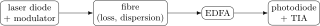

Overview
| block | notes |
|---|---|
| wave optics | dispersion, complex index, Gaussian beams, TIR, thin films |
| interference | Fabry–Perot, diffraction and gratings, coherence, holography |
| guided waves | slab waveguide, fibre modes, dispersion, couplers, link design |
| fibre systems | scattering and OTDR, fibre sensors (FBG, gyroscopes) |
| semiconductors | optical properties, LEDs, LED efficiency and photometry |
| lasers | stimulated emission, gas and solid-state, pulses, laser diodes |
| single mode | DFB, DBR, VCSEL, quantum wells, optical amplifiers |
| detection | photodiodes, APDs, photoconductors, circuits, noise, imaging |
| energy, modul. | solar cells, polarisation and wave plates, electro-optics |
Chapter by chapter:
- Wave nature of light: dispersion and group velocity, Gaussian beams, TIR and evanescent waves, AR coatings and dielectric mirrors, complex refractive index, Fabry–Perot, diffraction, coherence, holography.
- Waveguides and fibres: slab waveguide, fibres, dispersion and attenuation, bit rate and link budgets, couplers, scattering and OTDR, FBG sensors and gyroscopes.
- Semiconductors and LEDs: absorption and band gaps, LEDs, LED efficiency, photometry and driving.
- Lasers: stimulated emission, three- and four-level lasers, broadening, Q-switching, mode-locking, EDFA and SOA, laser diodes, DFB, VCSEL, QW lasers.
- Photodetectors: pn and pin photodiodes, APDs, photoconductors and phototransistors, circuits and speed, noise and NEP, image sensors, solar cells.
- Polarisation and modulation: polarisation and wave plates, electro-optic modulators.
Picture: an optical link

Exam preparation
All past papers of the written exam, solved and grouped by exercise type with the traps of each: Basics of Opto-Electronics exam. Thirty further problems over the whole programme, in the same style: full-syllabus problem set.
Engineering applications
Telecom and datacom links, LiDAR, displays and solid-state lighting, imaging sensors, photovoltaics, fibre sensors (gyroscopes, FBG strain gauges), laser machining and medicine.